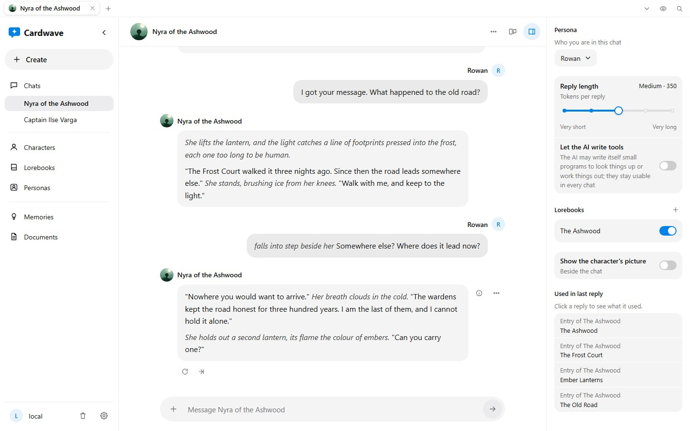

An AI character chat app and card editor for Windows. Bring any AI provider you already use. Your cards, chats and keys stay on your computer.

Cardwave keeps cards, chats, keys and settings on your computer. No sign-up, no sync, no analytics in the app. It goes online only for what you ask of it: a message to the provider whose API key you entered, a download you start (the search model, a voice), the web tools you switch on, and a look on GitHub for a new version, which Settings can switch off. There is no Cardwave server in the path.
Cardwave takes an API key and talks to the provider directly. Paste a key and Cardwave tells whose it is, then helps you pick a chat model and a cheaper model for its own background work. Pick a provider below, or add your own. Keep several setups as presets and switch between them. There is no Cardwave subscription.
Running something else? Add it by hand. Point Cardwave at any OpenAI-compatible server, including a local model on your own machine, by entering its address. Cardwave fetches its model list, or you type the models in yourself. A local server needs no API key.
Cardwave imports SillyTavern PNG cards and CCV4 cards, from Create or dropped onto your library. It exports a card as SillyTavern V3 or CCV4, and a chat in SillyTavern's chat format.
Cardwave opens cards from anywhere. See the list of sites that host character cards you can download and import into Cardwave.
Chat costs grow as a conversation lengthens, because each turn resends the history. The chat turn budget calculator estimates how many turns a budget buys for any model's per-token price.
Cardwave is free and built by one person. Released as-is. Bug reports and feature requests welcome via GitHub Issues.
Beta. Cardwave is in active development. Keep backups of your character cards.
CCV4 is a draft character card format built from small addressable text blocks in TOML, stored in PNG chunks. Read the CCV4 overview, with the full specification, the prompt-assembly algorithm, a reference example, and a live playground.